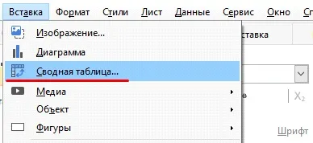
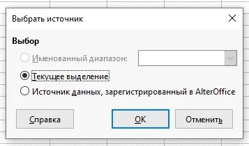
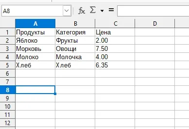
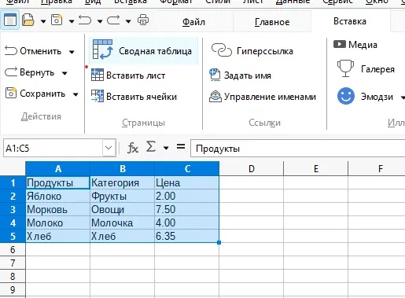
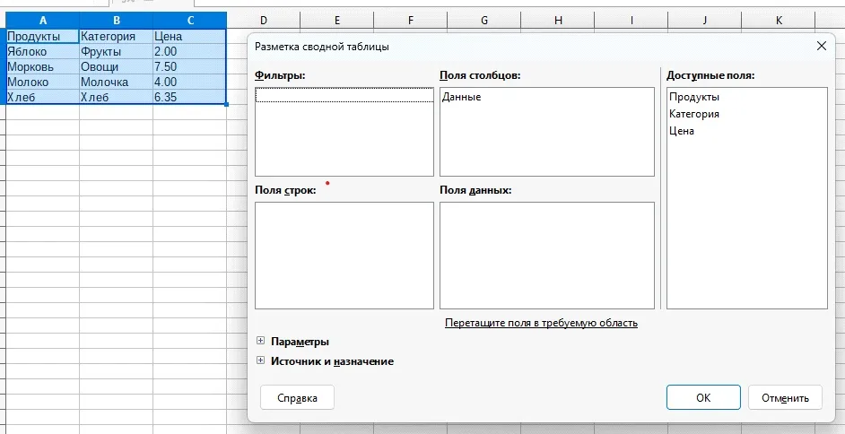
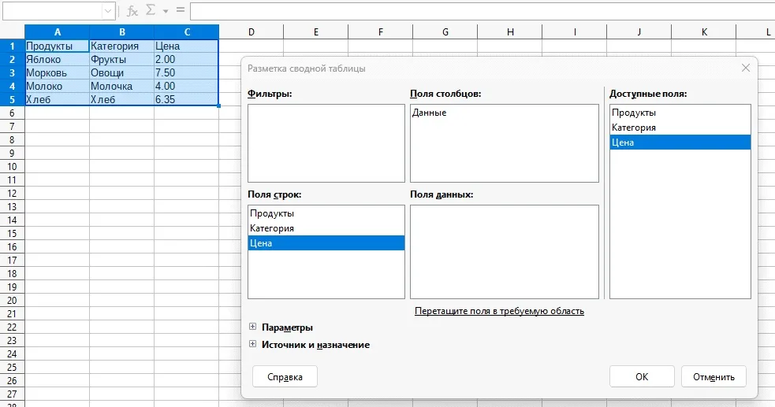
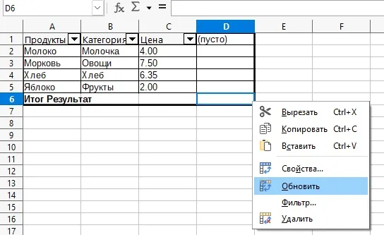
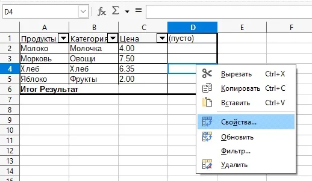
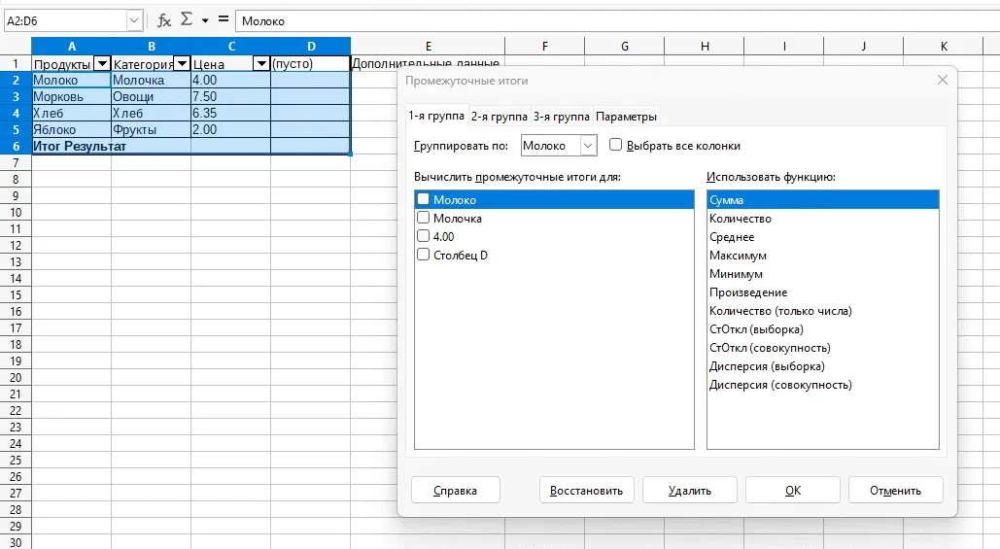

Создание сводных таблиц
Для создания сводной таблицы выполните следующие действия:
- Установите курсор в диапазоне ячеек, содержащих значения и заголовки строк и столбцов.
- Выберите Вставка > Сводная таблица…
- 
- В появившемся окне «Выбрать источник» выберите Текущее выделение и нажмите ОК.
- 
- Заголовки таблицы отображаются в области «Доступные поля». Перетащите их в нужные области: фильтры, поля столбцов, поля строк, поля данных и нажмите ОК. Сводная таблица появится на отдельном листе.
При перемещении заголовка в область Поля данных, слева от заголовка появится функция, используемая для вычисления данных. Двойной щелчок по одному из полей в области Поля данных вызовет диалоговое окно «Поле данных».
Дважды щелкните по полям в областях Поля столбцов, Поля строк, Фильтры, чтобы задать как будут вычисляться отображаемые промежуточные итоги.
Использование срезов
Срезы предоставляют возможность фильтровать данные в таблице. Срезы создаются на этапе добавления полей таблицы в область Фильтры. Чтобы отфильтровать данные нажмите на значок выбора фильтра (перевернутый треугольник) и установите флажок с желаемыми значениями.
Работа со сводными таблицами
- Подготовка данных:
- Убедитесь, что данные, с которыми Вы хотите работать, находятся в структурированном формате, с заголовками столбцов и соответствующими значениями.
- Убедитесь, что все данные находятся в одной таблице или диапазоне ячеек.
- 
- 
- В меню выберите Вставка > Сводная таблица.
- В появившемся диалоговом окне Разметка сводной таблицы укажите диапазон данных.
- 
- Произведите разметку сводной таблицы указанием необходимых диапазонов:
- В появившемся окне Вы можете выбрать поля, которые Вы хотите использовать для создания сводной таблицы.
- В поле Поля строк выберите поле или поля, по которым Вы хотите группировать данные (например, "Категория" или "Год").
- В поле Поля данных выберите поле или поля, которые Вы хотите отобразить в заголовках столбцов сводной таблицы (например, "Месяц" или "Продукт").
- В поле Поля данных выберите поле или поля, значения которых будут суммироваться или агрегироваться в сводной таблице (например, "Сумма" или "Количество")
- 
- Редактирование и форматирование сводной таблицы:
- Возможные варианты запросов в рамках одного документа или из отдельного файла:
- Изменение источника данных
- 
- Изменение расположения полей
- 
- Изменение агрегатных функций
- Добавление дополнительных полей и фильтров
- Использование сводных графиков
- Добавление итогов
- Применение условного форматирования

Выделите диапазон данных, включая заголовки столбцов.
В поле Источник и назначение укажите новый лист или существующий лист, на котором будет размещена сводная таблица.
Нажмите ОК.
После создания сводной таблицы Вы можете редактировать и форматировать ее, добавлять или удалять поля, изменять типы агрегирования данных и т. д.
Вы можете применять различные функции агрегирования, такие как сумма, среднее значение, максимум, минимум и т. д., к полям значений сводной таблицы.
Можно также применять фильтры и сортировку к сводной таблице для получения более точного анализа данных.
В рамках одного документа:
Вы можете изменять исходные данные, обновлять сводную таблицу и анализировать результаты изменений в режиме реального времени.
Вы можете добавлять новые данные в таблицу и обновлять сводную таблицу, чтобы включить новые значения.
Из отдельного файла:
Вы можете сохранять сводную таблицу в отдельный файл с расширением .ods и использовать его в дальнейшем для анализа или совместной работы.
Вы можете импортировать данные из другого файла или базы данных и создать новую сводную таблицу, используя эти данные. Для этого необходимо использовать формулу "=DDE".
AlterOffice ACell поддерживает форматы файлов Microsoft Excel (.xlsx), поэтому Вы можете открывать и работать с существующими сводными таблицами, созданными в MS Office, без особых проблем.
Если Ваши данные были изменены или добавлены новые данные, Вы можете обновить сводную таблицу, чтобы отразить эти изменения. Для этого выделите сводную таблицу и нажмите правую кнопку мыши и выберите в выпадающем меню Обновить.
В сводной таблице Вы можете изменить расположение полей, перетаскивая их в другие области. Например, Вы можете переместить поле из области Строки в область Колонки или наоборот. Это позволяет Вам изменять структуру сводной таблицы и получать различные виды анализа данных.
По умолчанию, сводные таблицы в AlterOffice ACell используют функцию "Сумма" для агрегации данных. Однако вы можете изменить эту функцию на другую функцию, такую как "Среднее значение", "Максимум", "Минимум" и другие.
Вы можете добавить дополнительные поля в сводную таблицу, поместив их в соответствующие области. Например, вы можете добавить поле "НДС" или "Отдел" для дополнительной группировки данных.
Вы также можете применять фильтры к сводной таблице, чтобы отображать только определенные значения или исключать некоторые данные. Для этого щелкните правой кнопкой мыши "Свойства" и выберите "Фильтр" во вкладке "Параметры" разметки сводной таблицы.
AlterOffice ACell позволяет создавать сводные графики на основе сводных таблиц. Для этого выделите сводную таблицу и выберите Вставка > Диаграмма. Затем в мастере диаграмм выберите желаемый тип графика, например, столбчатую диаграмму или круговую диаграмму, и настройте параметры графика.
Вы можете добавить итоговые строки или столбцы в сводную таблицу, чтобы отобразить суммарные значения или другие агрегированные данные. Например, вы можете добавить строку с общей суммой продаж или столбец средних значений. Для этого выберите сводную таблицу, перейдите во вкладку "Данные" на панели инструментов и выберите нужную опцию для добавления итогов.
Вы можете использовать условное форматирование для выделения определенных значений в сводной таблице на основе заданных условий. Например, Вы можете выделить ячейки с наибольшими значениями или значениями, удовлетворяющими определенному критерию. Для этого выделите сводную таблицу, перейдите во вкладку "Данные" на панели инструментов и выберите "Промежуточные итоги".